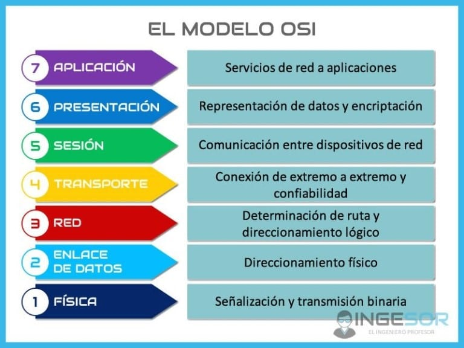

|
Hub
Un concentrador, también conocido como hub, es un dispositivo de red que permite centralizar diferentes nodos de una red de computadoras. Su función principal, establecer una conexión entre un número indefinido de computadoras y permitir el intercambio de datos. Permite retrasmitir la información que le mandaron a cada uno de los dispositivos, la máquina que lo necesita lo toma y las demás lo ignoran.
|

|
|
Switch
Un switch, también conocido como conmutador, es un dispositivo que conecta distintos equipos en una red. Permite que los dispositivos se comuniquen entre sí y compartan información. Su conmutador de red se conecta al enrutador a través de uno de los puertos del enrutador , lo que amplía la cantidad de dispositivos en la red de su pequeña oficina, como computadoras de escritorio, impresoras, portátiles, etc. que tienen una conexión cableada a Internet.(switch de capa 2). Son los más eficiente.0
|

|
|
Routers
Un router es un dispositivo que proporciona Wi-Fi y que generalmente está conectado a un módem. Envía información desde Internet a los dispositivos personales, como computadoras, teléfonos o tablets. Los dispositivos conectados a Internet de tu casa conforman la red de área local (LAN). (switch de capa 3)
|

|
|
Bridge
Un puente de red es un dispositivo o software que conecta y filtra el tráfico entre segmentos de red. Los puentes permiten que los segmentos de red se comuniquen como si fueran uno solo. Sirven para enlazar directamente dos redes físicamente cercanas. Se conectan en parejas enlazando dos o más redes locales y formando una red de área extensa (WAN) a través de líneas telefónicas. Trabaja en la capa número 2, la de enlace. Este conoce la MAC de origen y destino, por lo que es muy eficiente.
|

|
Repetidor
En transmisión de señales, se trata de es un dispositivo que refuerza las señales amplificándolas o regenerándolas. Esta tecnología se utiliza habitualmente en telecomunicaciones y redes informáticas para ampliar el alcance y superar la degradación de la señal. (Extiende la señal)
|

|
Capas del modelo OSI
|

|
0000
|
7. Capa de Aplicación
|
Es la capa que interactúa directamente con los usuarios y las aplicaciones, y que permite la comunicación entre los programas de aplicación. La capa de aplicación del remitente transfiere la comunicación de datos a la capa inferior. Cada capa agrega sus propios encabezados y direccionamientos a los datos. Los datos descienden por las capas hasta que se transmiten a través del medio físico. La capa de aplicación también permite: Compartir recursos, Acceder remotamente a archivos, Gestionar la red, Conectar las aplicaciones de software y las experiencias de usuario.
Protocolos:
POP: (Post Office Protocol) es un estándar de Internet que permite a los clientes de correo electrónico acceder a los correos almacenados desde un servidor remoto. Solicita la lista de mensajes y una vez que el servidor se la envía, las descarga para despues borrarlas.
DNS: (Domain Name System) es un conjunto de reglas que permite a los usuarios de internet usar nombres de dominio en lugar de direcciones IP.
HTTP: (Hypertext Transfer Protocol) es el protocolo fundamental que permite la comunicación entre un cliente (como un navegador web) y un servidor web para la transferencia de información en la web, utilizando un sistema de solicitud-respuesta.
HTTPS, SMTP
|
|
6. Capa de Presentación
|
Es la capa que se encarga de traducir, cifrar y comprimir los datos entre el emisor y el receptor. La capa de presentación traduce los datos entre la capa de aplicación y el formato de red, comprime los datos usando algoritmos que buscan patrones de bits repetidos y los reemplazan con un token, cifra los datos si la capa de aplicación lo solicita y envía el mensaje a la capa de sesión, que abre una sesión para la comunicación.
Protocolos:
ASCII: protocolo de comunicación que utiliza caracteres ASCII para enviar comandos y recibir respuestas entre una computadora y un dispositivo. (codigo ASCII es un código que permite a las computadoras interpretar y mostrar letras, números y símbolos asignando un valor numérico a cada carácter.)
SMTP: El protocolo simple de transferencia de correo es un estándar técnico que permite enviar y recibir correos electrónicos por internet. Es un protocolo de comunicación que utilizan los servidores de correo y los clientes de correo electrónico.
SOAP: (Protocolo Simple de Acceso a Objetos) es un protocolo de mensajería que permite la comunicación entre aplicaciones distribuidas, basado en XML que define tres partes en todos los mensajes: sobre, cabecera y cuerpo.
JPEG, MPEG, PNG, HTTP
|
|
5. Capa de Sesión
|
Se encarga de gestionar las comunicaciones entre aplicaciones de dos sistemas. La capa de sesión establece una conexión entre dos sistemas, denominada sesión, sincroniza el intercambio de datos (en caso de interrupción, la capa de sesión retoma la transmisión de datos desde su último punto de sincronización) y mantiene la conexión hasta que finalice la transferencia.
Protocolos:
SIP: El Protocolo de Iniciación de Sesión es un protocolo de señalización que se utiliza para establecer, gestionar y finalizar sesiones multimedia, como llamadas de voz, videoconferencias y mensajería instantánea.
RTP: El Protocolo de Transporte en Tiempo Real es un protocolo de red que permite transmitir audio y video en tiempo real. Se utiliza en sistemas de comunicación y entretenimiento, como telefonía, videoconferencias, televisión y servicios web.
RPC: (Remote Procedure Call) protocolo de paso de mensajes que implementa otros protocolos no RPC como, por ejemplo, el proceso por lotes y la difusión de llamadas remotas. El protocolo RPC también admite procedimientos de devolución de llamada y la subrutina select en el lado del servidor.
TCP
|
|
4. Capa de Transporte
|
Asegura una entrega de datos confiable y ordenada entre aplicaciones en dispositivos finales. La capa de transporte recibe los datos de la capa de sesión, luego decide cómo dividir los datos en segmentos, se comunica con el dispositivo de origen para volver a transmitir los datos que se hayan perdido y envía los datos a la capa de red.
Protocolos:
TCP: El Protocolo de Control de Transmisión es un estándar de comunicación que permite a los dispositivos de una red intercambiar datos de manera confiable. Es un protocolo fundamental de internet que se utiliza para entregar datos en redes digitales.
UDP: El Protocolo de Datagramas de Usuario es un protocolo de comunicación que permite enviar datos por internet de manera rápida y sin necesidad de establecer una conexión. Se utiliza para aplicaciones que son sensibles al tiempo, como la reproducción de videos, las búsquedas DNS y los juegos.
SCTP: El Protocolo de Transmisión de Control de Flujo es un protocolo de comunicaciones que permite enviar datos de manera fiable y secuencial.
SSL, TLS
|
|
3. Capa de Red
|
Es responsable de direccionar y enrutar paquetes de datos entre diferentes redes. Se encarga de recibir segmentos de datos de la capa de transporte, encapsular los segmentos de datos en paquetes IP, entregar los paquetes a la capa de enlace de datos, comprobar el funcionamiento de servidores en otras redes, gestionar el direccionamiennto lógimo mediante direcciones IP y gestionar el reenvío de paquetes.
Protocolos:
IP: El Protocolo de Internet es un conjunto de reglas, para enrutar y direccionar paquetes de datos para que puedan viajar a través de las redes y llegar al destino correcto.
ARP: (Address Resolution Protocol, o Protocolo de Resolución de Direcciones) es un protocolo de red que asocia direcciones IP a direcciones MAC. Es fundamental para que las redes funcionen, ya que permite que los dispositivos se comuniquen entre sí.
ICMP: El Protocolo de Mensajes de Control de Internet es un conjunto de reglas que se usan para comunicar errores de transmisión de datos en una red. Se utiliza en dispositivos de red como los enrutadores.
IPsec, IGMP, OSPF
|
|
|
2. Capa de Enlace de datos
|
Es responsable de la transferencia fiable de información a través de un circuito de transmisión de datos. Recibe peticiones de la capa de red, canvierte los datos en tramas, transmite las tramas a través del medio físico y obtiene la dirección e instrucciones de enrutamiento para preparar los datos para su recorrido por la red.
Protocolos:
MAC/LLC: Son protocolos de la capa de enlace de datos. El protocolo MAC (control de acceso al medio) se encarga de los aspectos físicos, mientras que el protocolo LLC (El protocolo de Control de Enlace Lógico) facilita la comunicación entre la capa de red y la capa de enlace de datos
VALN: es una tecnología que permite segmentar una red física en redes virtuales lógicas. Esto permite administrar la red de forma más eficiente y mejorar la seguridad.
ATM: (Asynchronous Transfer Mode) es un protocolo de comunicación que permite transmitir datos, voz y video. Se utiliza en redes de área amplia (WAN) y es conocido por su alta calidad de servicio.
HDP, HDCL, PPP, Q.921
|
|
1. Capa Física
|
La capa física del modelo OSI es la capa más baja del modelo y se encarga de la transmisión de datos a través de medios físicos. Es la capa que define cómo se establecen, mantienen y terminan las conexiones físicas entre los dispositivos, además del sentido y velocidad de transmisión y la función de cada línea. Esta capa establece las funciones físicas a la red, representa los bits en señales predecibles (eléctricas, ópticas o de radio), modula y sincroniza bits y trasmite datos binarios sin procesar a través del medio físico.
Protocolos:
RS-232, RJ45, V.34,100BASE-TX, SDH, DSL, 802.11
|